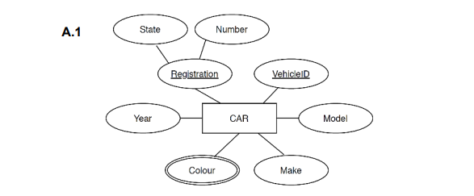
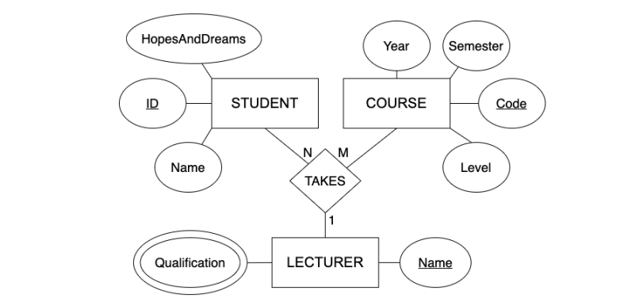
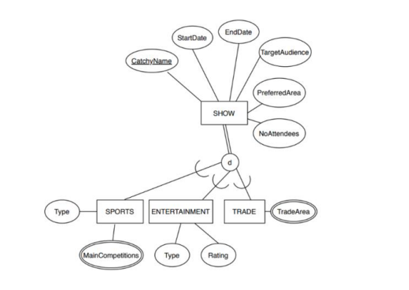
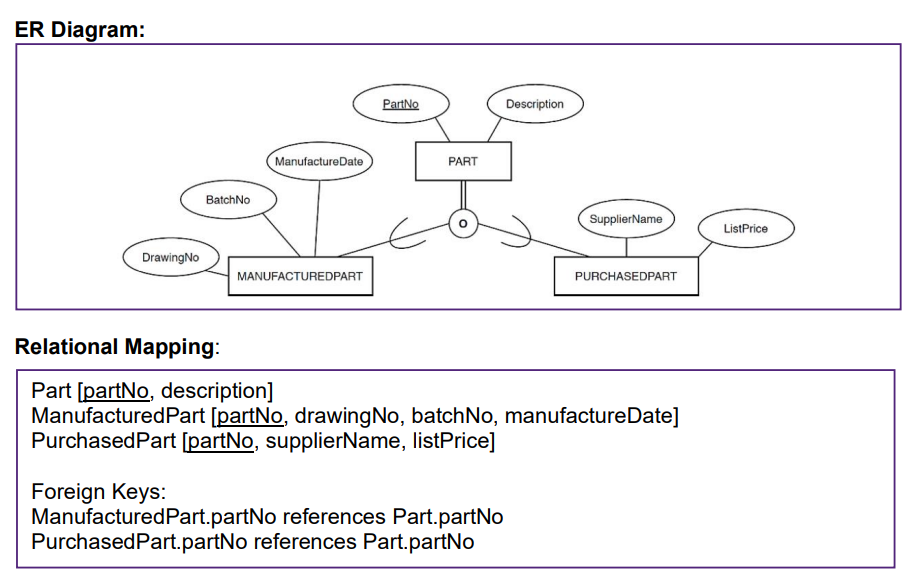
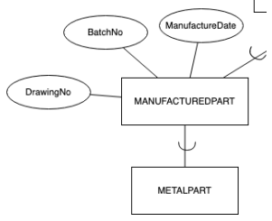

Tutorial week 4, 2.2: Mapping
Please download File 2.2. Mapping - Worksheet.pdf from module 2 for todays lesson.
Syntax pointers:
For a relation
- Entity, followed by attributes
- first attribute should be primary key
- primary key must be underlined
- foreign key references should follow immediately after the relation
Example
Customer [ ID , Name, Address, email, phone, receiptID]
Customer.receiptID references Receipt.ID
A.1

B.2

C.1

Section D: Analysis and Application

D.1 Which of the following statement(s) is correct based on the ER diagram?
- A) All Parts stored in the system will have a BatchNo.
- B) A Part may be a ManufacturedPart or a PurchasedPart or neither.
- C) If a Part is already a ManufacturedPart then it cannot be a PurchasedPart.
- D) A Part must be a ManufacturedPart or a PurchasedPart or both
D.2 Consider the following addition to the ER diagram: What would be the correct relational mapping for METALPART?

A) METALPART[partNo]
METALPART.partNo references Part.partNo
B) METALPART[partNo, batchNo, manufactureDate, drawingNo]
METALPART.partNo references MANUFACTUREDPART.partNo
C) METALPART[partNo]
METALPART.partNo references MANUFACTUREDPART.partNo